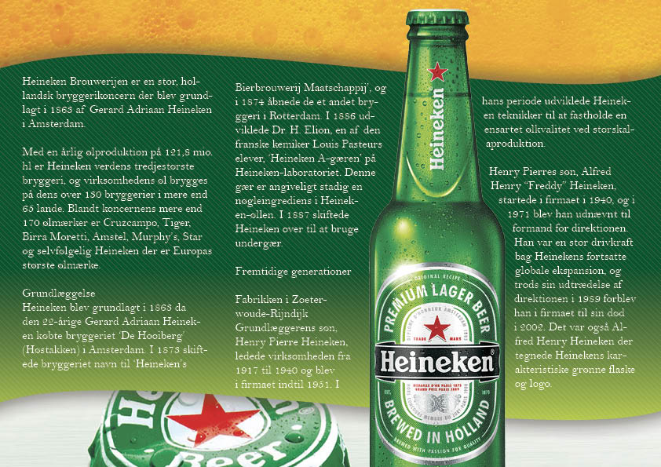

Photoshop
Photoshop er et pixelbaseret program, der primært bruges til billedbehandling. I erhvervslivet er det mere eller mindre end uskreven regel, at Photoshop er ”det eneste rigtige” at bruge. Det kan som nævnt bruges til billedbehandling, men mange bruger det også som et kunstnerisk værktøj til flotte digitale illustrationer. Mange bruger det også til at skabe grafik, der skal benyttes på websites, men nogle bruger det også bare til at lave prototyper af websites.
- Layers
- I Photoshop arbejder man i lag, og derfor kan man arbejde med særskilte elementer, der ikke påvirker hinanden, medmindre man giver kommandoen til det.
- Adjustement layers
- Med denne funktion skabes der et lag, der ændrer laget under det. Derved kan man eksempelvis ændre på farverne, men det er ikke en permanent ændring, og derfor kan man let slette det justeringslaget igen uden at påvirke det underliggende lag.
- Layer effects
- Udover justering af farver eller lignende, kan man også lave et effektlag, der eksempelvis giver et objekt en drop shadow eller stroke.
- Masker
- Layer masks, eller bare masker, bruges til at afgrænse et bestem område i den billedfil, man arbejder med. Derved er det kun det valgte område, der vises, og man kan for eksempel fjerne dele af billedet midlertidigt uden at slette det permanent. Man arbejder således non-destructive.
- Selection tools
- Der findes tre selection tools i Photoshop: quick selection tool, magic wand tool og lasso tool. Quick selection tool er let at bruge. Man skal blot markere det ønskede område, og vælger man for meget, kan man fjerne markeringen fra det område igen. Magic wand tool kan det samme og så alligevel ikke. Det afgrænser og udvælger automatisk det område, man klikker på, men i modsætning til quick selection tool kan man ikke fravælge små områder igen, hvis man har markeret for meget. Lasso tool er også et markeringsværktøj, og med lasso tool foregår markeringen 100 % ved frihånd.
- Fritlægning
- Når man fritlægger noget i Photoshop, markerer man noget, man ønsker at bevare. Det kan eksempelvis være et billede taget af et produkt, hvor der er skygger eller andet i baggrunden, man ønsker at slette. Ved at fritlægge produktet kan man overfører det til et nyt, blankt canvas.
Illustrator
Illustrator er et vektorbaseret grafikværktøj, hvilket ved sige, at grafik skabt i Illustrator kan skaleres uendeligt uden at gå på kompromis med opløsningen. Det vil nemlig altid stå skarpt i modsætning til pixel-filer. Typisk bruges Illustrator til udarbejdelse af logoer og flotte illustrationer, men det kan også bruges til eksempelvis tekstarbejde.
- Layers
- I Illustrator arbejder man i lag, og derfor kan man arbejde med særskilte elementer, der ikke påvirker hinanden, medmindre man giver kommandoen til det.
- Paths
- ”Hemmeligheden” bag vektorgrafik er matematik. Illustrator genkender derfor et hav af forskellige former, som man skaber og efterfølgende kan ændre på. Man kan altså ikke tegne i frihånd og skabe realistiske portrætter eller lignende. Det vil være enormt svært at skabe i vektor – hvis ikke umuligt.
- Pen tool
- I stedet for at benytte Illustrators forhåndsskabte former, kan man benytte pen tool. Man får derved mulighed for at skabe en masse forskellige figurer og former, og man kan efterfølgende skabe kurver.
Indesign
Indesign er et design- og publiceringsprogram, der bruges til opsætning af eksempelvis reklamer, bøger eller plakater. Det skal derfor ikke bruges til at lave eksempelvis logoer i. Ganske vist kan man også opsætte reklamer og lignende i Photoshop, men det er både hurtigere og lettere i Indesign. Som multimediedesigner er det begrænset, hvor meget man kommer til at bruge Indesign, da det typisk benyttes til opsætning af dokumenter, der skal sendes videre til et trykkeri, så dokumentet kan blive trykt på papir.
Opsætning af dokumenter
I modsætning til Illustrator og Photoshop arbejder man i Indesign med bokse, hvori der kan indsættes grafik, tekst eller billeder. Man indsætter dog ikke tingende direkte ind i billedet, men i stedet som et link. Det er derfor vigtigt, at man har styr på filplacering af de forskellige elementer, og at man ikke flytter rundt på dem. Indesign er i forvejen et tungt program for computere, men hvis alle billeder skulle indsættes direkte i dokumentet, vil det blive nærmest umuligt at arbejde med på en normal ”dagligdagscomputer”.
Når filerne er linket til dokumentet, er det muligt at ændre på dem efterfølgende i begrænset omfang. Man kan eksempelvis lavede kurvede linjer, hvilket vi i undervisningen benyttede i fremstillingen af en Heineken flyer.
